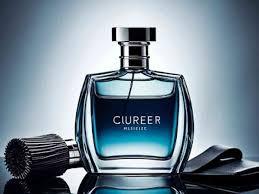

Introdução
- A seguir, confiram alguns de nossos modelos mais vendidos e uma breve descrição sobre eles
Perfume 1
- Com seu cheiro amadeirado, tem como maior qualidade a permanencia no corpo e a força de permanência.
Perfume 2
- Com seu cheiro amadeirado, tem como maior qualidade a permanencia no corpo e a força de permanência.
Perfume 3
- Com seu cheiro amadeirado, tem como maior qualidade a permanencia no corpo e a força de permanência.
Perfume 4
- Com seu cheiro amadeirado, tem como maior qualidade a permanencia no corpo e a força de permanência.

Perfume 5
- Com seu cheiro amadeirado, tem como maior qualidade a permanencia no corpo e a força de permanência.